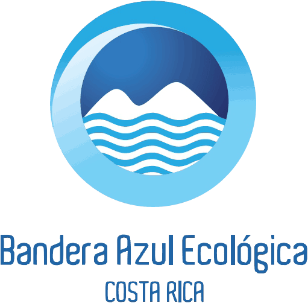
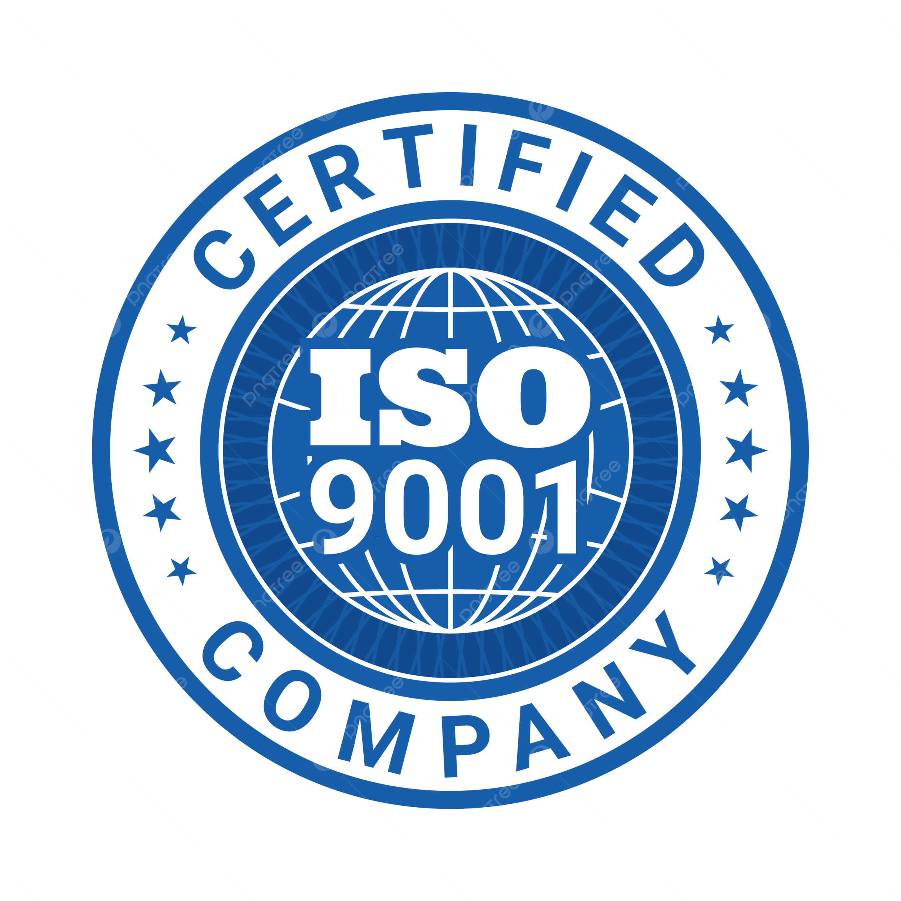
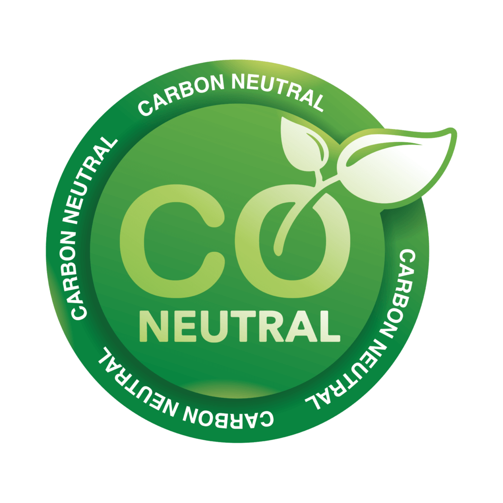

Viabilidades ambientales
Asesoramos en el proceso de obtención de la viabilidad ambiental para que el proyecto cumpla con lo establecido por la normativa aplicable.
Acompañamiento especializado para fortalecer el cumplimiento ambiental, mejorar la eficiencia operativa y respaldar el compromiso sostenible de cada organización.
Obtener certificaciones de calidad y ambientales mediante consultoría especializada puede impulsar la confianza de los clientes y mejorar la eficiencia operativa.
Además, permite posicionar a la organización como una empresa competitiva que trabaja bajo estándares reconocidos y abre nuevas oportunidades de negocio.
Estos servicios reúnen la información suministrada. Los alcances técnicos, autoridades involucradas y requisitos se confirmarán con el cliente antes de publicar la versión final.
Asesoramos en el proceso de obtención de la viabilidad ambiental para que el proyecto cumpla con lo establecido por la normativa aplicable.
Gestionamos los requisitos técnicos y legales necesarios para respaldar el tratamiento adecuado de las aguas residuales del proyecto.
Acompañamos el proceso para solicitar y formalizar el uso legal del recurso hídrico ante las autoridades competentes.
La asesoría puede organizarse según el objetivo ambiental, de calidad o de sostenibilidad que persiga cada empresa.
Referencias visuales suministradas para presentar algunas de las certificaciones disponibles dentro de esta área de servicio.



Conversemos por teléfono, WhatsApp o correo electrónico sobre las necesidades ambientales de su organización.